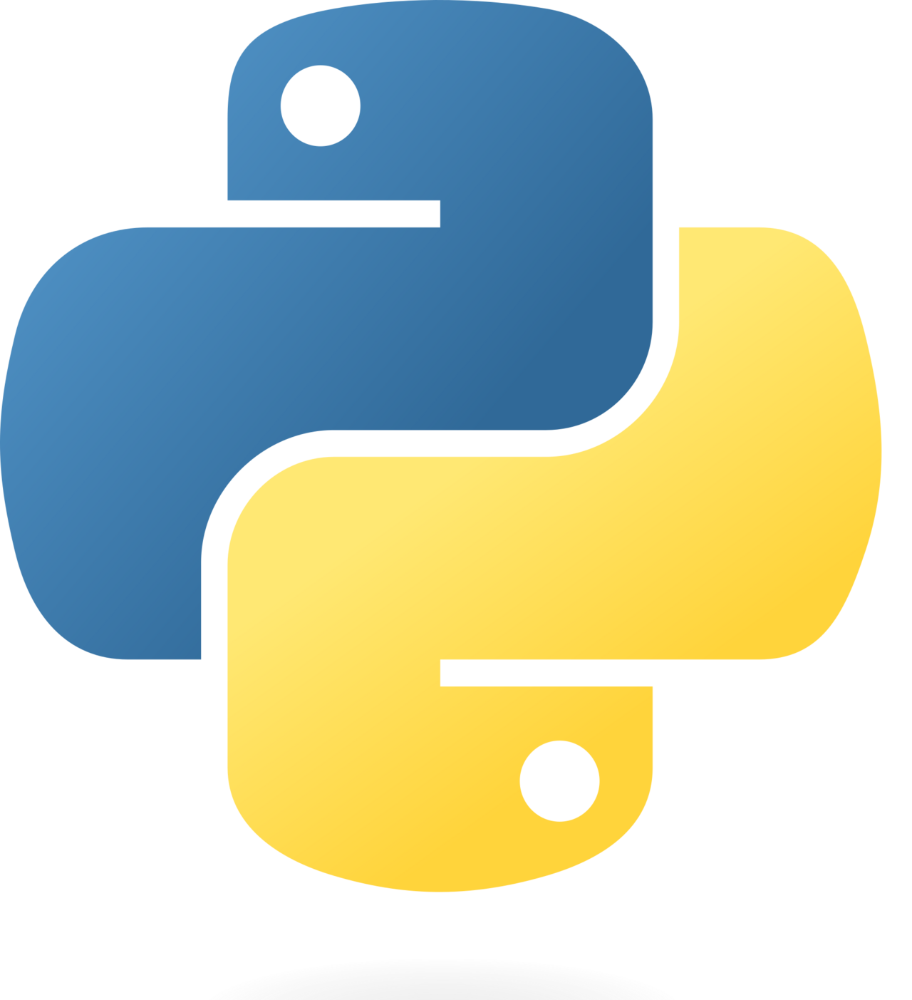
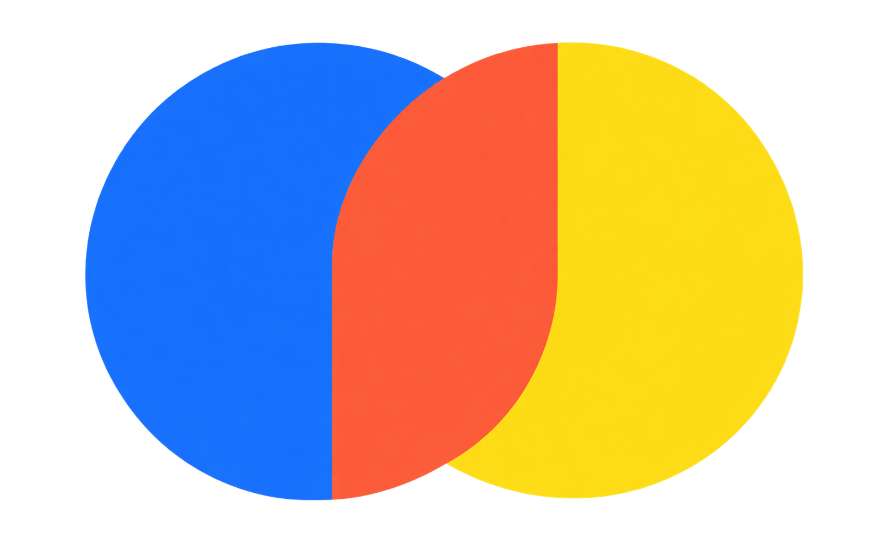

Hola, soy Javi
Desarrollador Full Stack Junior | IA y Automatización
Apasionado por la tecnología, la creatividad y los retos. Siempre en busca de seguir aprendiendo y
creciendo.

Desarrollador Full Stack Junior | IA y Automatización
Apasionado por la tecnología, la creatividad y los retos. Siempre en busca de seguir aprendiendo y
creciendo.
CODI Transport es una aplicación web para la gestión del transporte escolar,
diseñada para controlar la asistencia de los alumnos en cada turno de forma rápida, sencilla y
accesible desde cualquier dispositivo.
🔐 Gestión de usuarios:
El sistema cuenta con autenticación y diferentes roles. Los responsables
gestionan únicamente los alumnos asignados a su cuenta, mientras que los administradores
disponen de acceso global y pueden gestionar los diferentes registros.
🔥 Firebase:
La aplicación utiliza Firebase Authentication y Firestore para gestionar los
usuarios y almacenar y actualizar la información en tiempo real.
🛠️ Tecnologías:
HTML5, CSS3, JavaScript, Firebase Authentication y Firestore.

StreetVibesShop es una tienda online de moda urbana desarrollada como Trabajo
de Fin de Grado, construida con Symfony siguiendo una arquitectura MVC. Incluye
catálogo de productos, gestión de usuarios, carrito y proceso de compra.
🔐 Roles y administración:
Cuenta con diferentes niveles de acceso. El panel desarrollado con EasyAdmin
permite gestionar productos, usuarios y pedidos, mientras que el rol Manager dispone de acceso a
información y reportes de ventas.
⚙️ Desarrollo Full Stack:
Utiliza Doctrine y MySQL para la gestión y persistencia de datos, junto con
Twig y Bootstrap para crear una interfaz responsive.
🛠️ Tecnologías:
Symfony, PHP, Doctrine, MySQL, Twig, Bootstrap y EasyAdmin.

Aplicación web desarrollada como proyecto académico para recrear las principales funcionalidades
de una
plataforma de streaming de música, con una interfaz inspirada en Spotify.
🎵 Funcionalidades:
Incluye reproducción de canciones, control de volumen, gestión de listas de reproducción y
diferentes
funcionalidades relacionadas con la gestión de usuarios.
💻 Frontend y Backend:
El proyecto combina Angular en el frontend y Node.js en el backend,
incorporando
autenticación, validación de usuarios y una estructura backend para gestionar las peticiones.
🚀 Desarrollo:
Partiendo de un proyecto guiado, amplié la aplicación con funcionalidades
propias y mejoras
adicionales que explico con más detalle en la
documentación del proyecto.
🛠️ Tecnologías:
Angular, TypeScript/JavaScript, Node.js, HTML y CSS.

Septiembre 2025 - Marzo 2026
● Desarrollo de una aplicación web para gestionar recursos e inscripciones.
● Automatización de procesos con Python y Google Apps Script.
● Formación en IA y competencias digitales.
Abril 2024 - Junio 2024
● Desarrollo de una aplicación web con HTML, CSS, JavaScript y PHP.
● Implementación de funcionalidades backend y bases de datos.
● Gestión de usuarios y control de acceso.
● Uso de Git y GitHub para el control de versiones.
Mayo 2020 - Junio 2020
● Edición de video, audio y fotografía: Adobe Premiere, Audacity, Adobe Photoshop
● Montaje de iluminación, sonido y vídeo para eventos y grabaciones.
 HTML5
HTML5
 CSS3
CSS3
 JavaScript
JavaScript
 Angular
Angular

Python FastAPI
FastAPI
 RAG
RAG

ChromaDB Firebase
Firebase
 MySQL
MySQL
 Git / GitHub
Git / GitHub
 Java
Java
 PHP
PHP
 Symfony
Symfony
2026
Formación práctica en ciberseguridad, gestión de riesgos y protección de sistemas y datos. Adquirí conocimientos sobre análisis de vulnerabilidades, detección y respuesta ante amenazas, seguridad de redes y aplicación de controles de seguridad, reforzando mi capacidad para desarrollar y mantener aplicaciones más seguras.
2026
Formación práctica en desarrollo de aplicaciones con Inteligencia Artificial e IA generativa. Trabajé con Python, Machine Learning, LLMs, Prompt Engineering, RAG, agentes de IA e integración de modelos y APIs en aplicaciones web. También apliqué IA al desarrollo, testing, automatización y seguridad del software mediante proyectos prácticos.
2025
Aprendí a mejorar la productividad mediante herramientas de IA, como Gemini, para automatizar tareas, generar ideas y resolver problemas de manera eficiente. Adquirí conocimientos básicos de IA y su aplicación práctica en el entorno laboral y personal.
2024
Aprendí a diseñar y desarrollar aplicaciones web completas, trabajando con HTML, CSS y JavaScript en el frontend para crear interfaces dinámicas y responsivas. En el backend, utilicé Java y PHP para gestionar la lógica de negocio y la conexión con bases de datos, desarrollando soluciones eficientes y funcionales.
2020
Aprendí a manejar equipos de sonido y mezcla, producción musical y edición de vídeo. Adquirí conocimientos sobre sonorización de eventos, grabación, postproducción y técnicas de DJ.
Mi nombre es Javi, un desarrollador web apasionado por la tecnología y la creación de soluciones digitales eficientes. Mi trayectoria comenzó en el mundo del sonido y la producción audiovisual, donde aprendí a trabajar con herramientas técnicas y a desarrollar una mentalidad creativa. Sin embargo, mi verdadero interés por la informática me llevó a especializarme en el desarrollo de aplicaciones.
Durante mi formación en el Grado Superior en Desarrollo de Aplicaciones Web, adquirí experiencia en tecnologías frontend como HTML, CSS y JavaScript, creando interfaces dinámicas y responsivas. En el backend, trabajé con Java y PHP, construyendo sistemas funcionales y optimizados para la gestión de datos y la lógica de negocio.
Me considero una persona curiosa y en constante aprendizaje. Actualmente, complemento mis conocimientos viendo cursos y explorando nuevas tecnologías por mi cuenta, ya que creo que en este campo es fundamental seguir formándose para mejorar y crecer profesionalmente.
Fuera del desarrollo, soy un apasionado del deporte y llevo jugando al fútbol desde que tengo uso de razón, además de practicar otros deportes diariamente. Esto me ha enseñado la importancia del trabajo en equipo, la disciplina y la constancia, valores que también aplico en mi día a día como desarrollador.
Ahora mismo, mi objetivo es dar mis primeros pasos en el mundo laboral, aprender de profesionales con experiencia y seguir creciendo en el sector. Aspiro a mejorar constantemente, asumir nuevos retos y avanzar tanto a nivel profesional como personal.